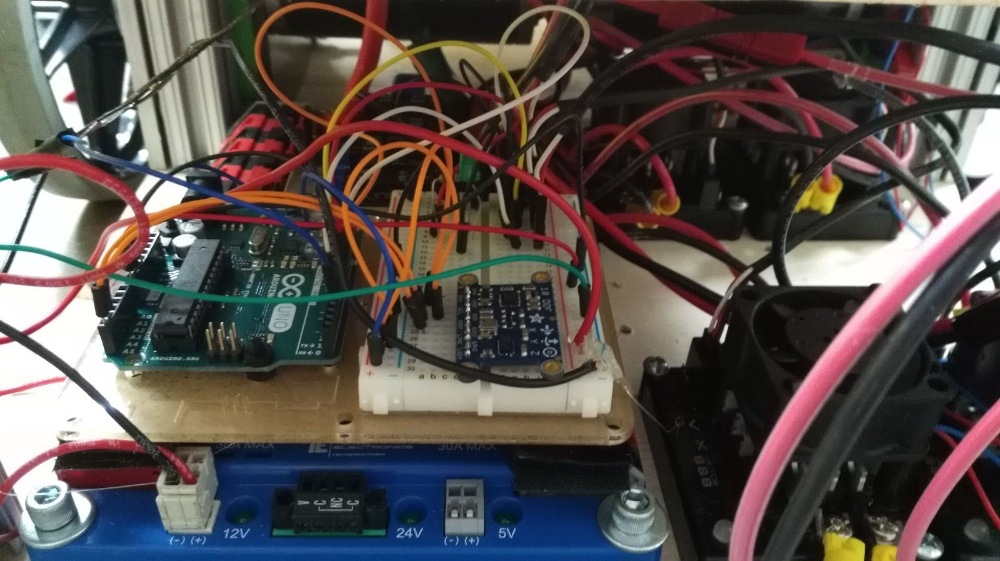
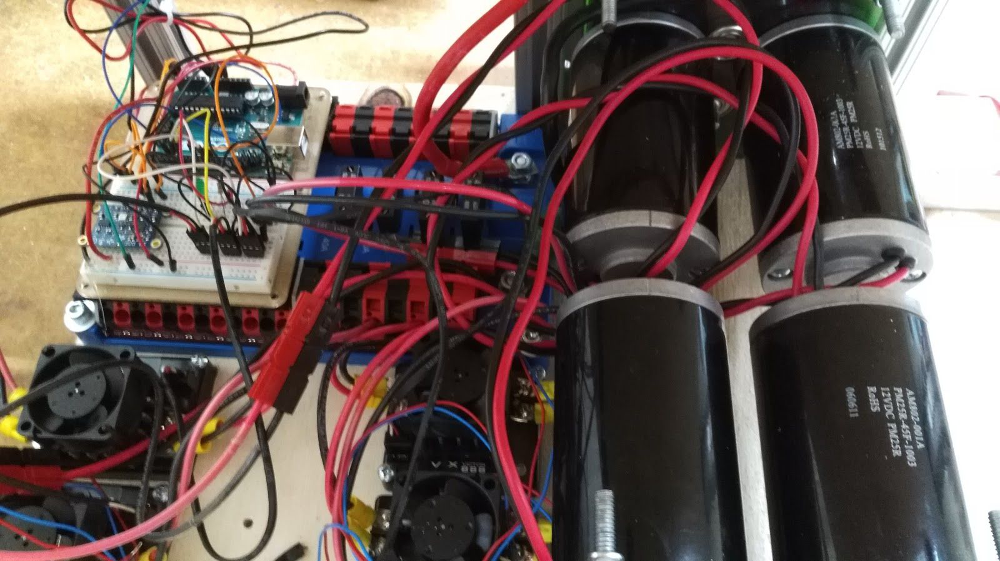
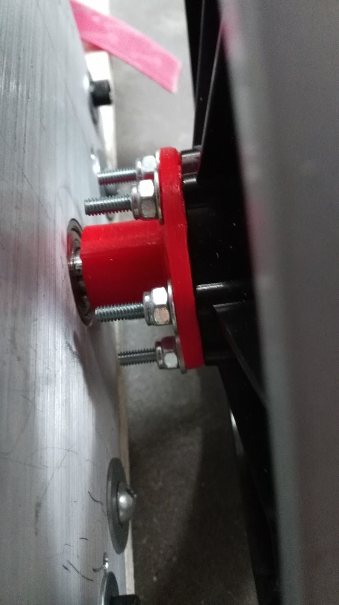
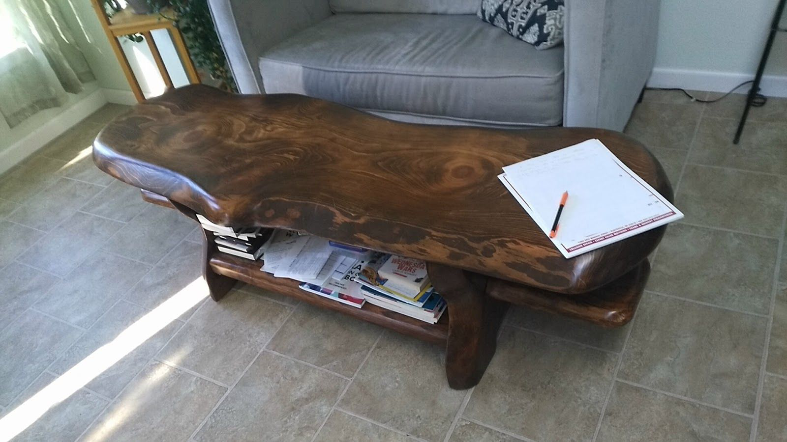
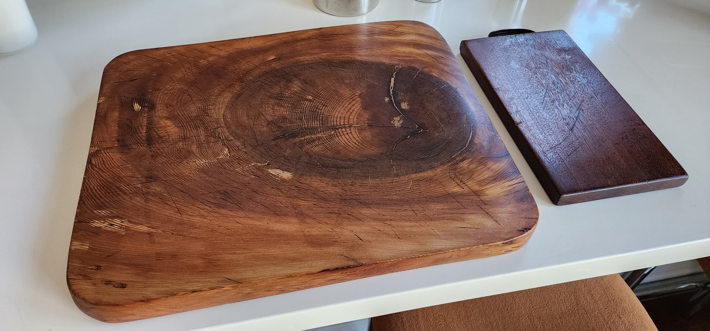
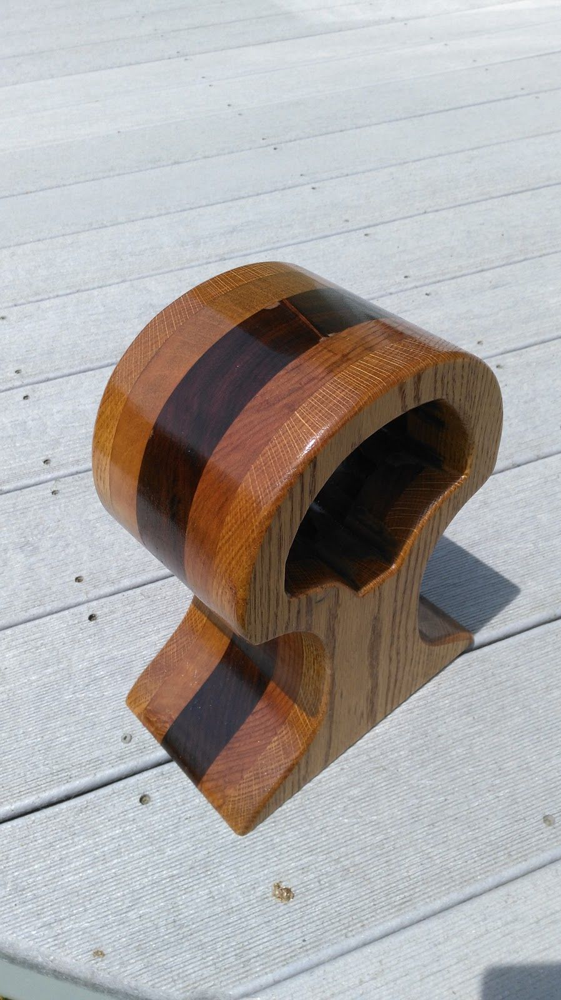
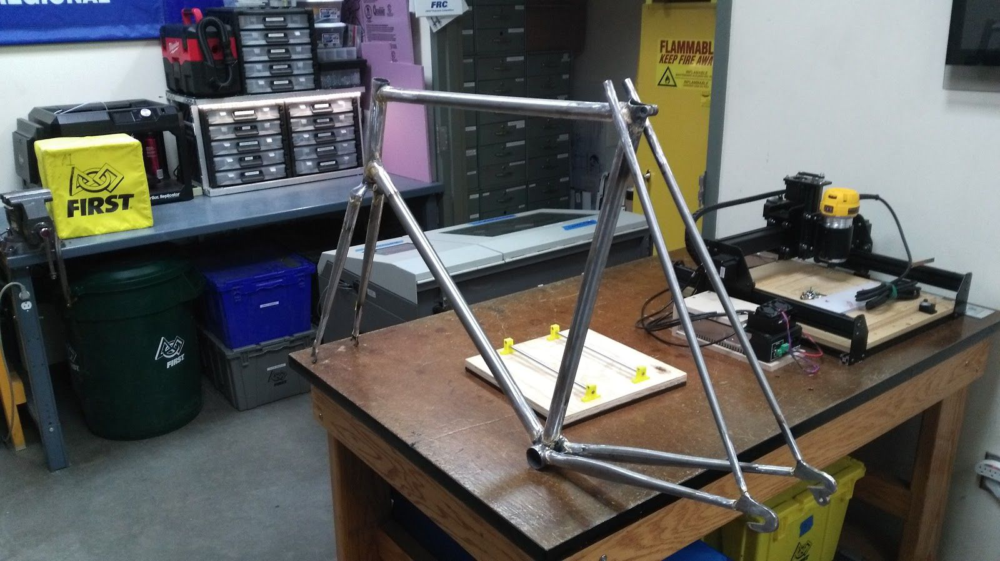
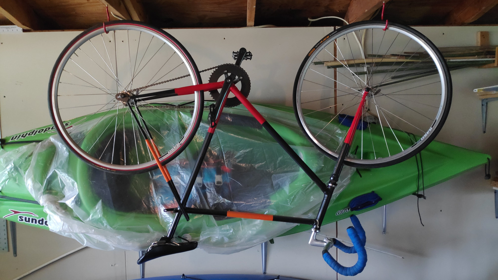
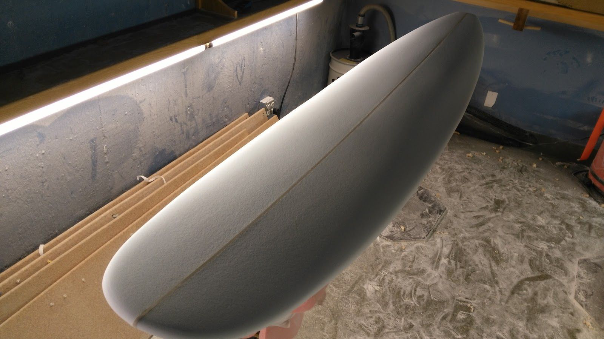
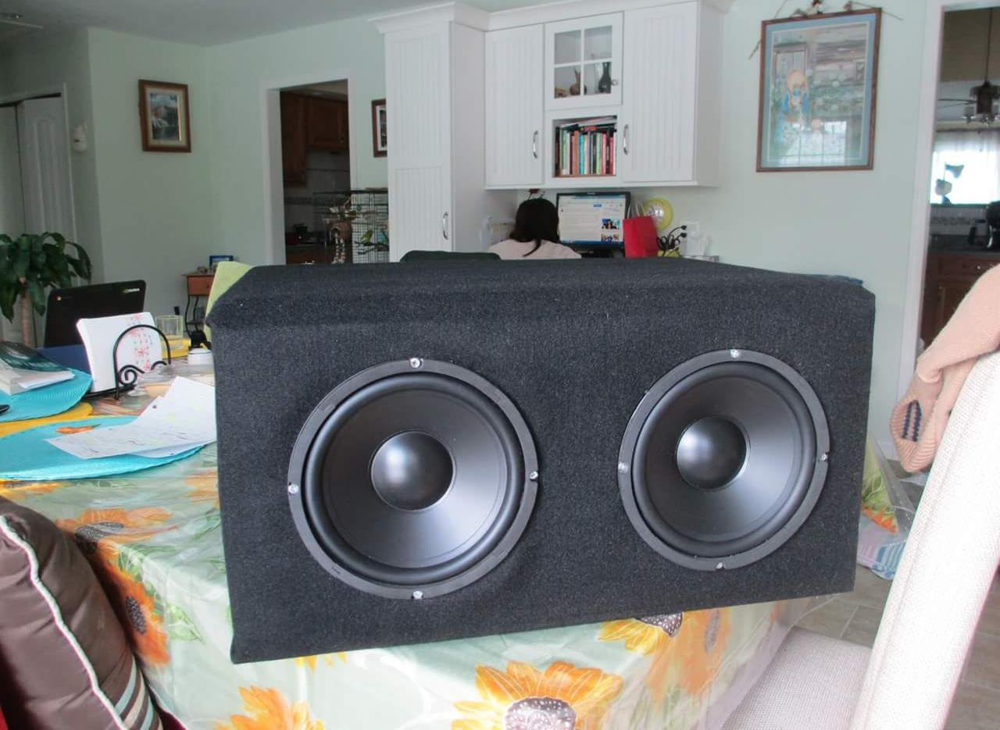

DIY 3D Printer Hotend Upgrade
What started as a cheap kit quickly became a multi-year mechanical engineering project in its own right.
- After the stock hot end delivered inconsistent prints at 0.3 mm layer heights, I tore it down and redesigned the entire hot end and direct-drive extrusion system from scratch in Autodesk Inventor, measuring every interface with digital calipers to ensure precise fit.
- Printed the replacement parts on the printer itself — a satisfying bootstrap — then installed them and re-calibrated from scratch.
- Through systematic tuning of temperatures, flow rates, retraction, and first-layer adhesion, brought the machine from unreliable 0.3 mm prints to consistent 0.1 mm layer heights.
- Experimented with glass, Kapton tape, and PEI bed surfaces; settled on a glue-stick layer on a glass bed for the most reliable PLA adhesion and clean part release.

Self-Balancing Scooter (Hackathon)




Built at a prototype hackathon: a self-balancing two-wheeled scooter oriented sideways like a skateboard, reducing overall width compared to conventional hoverboards while keeping the same riding mechanics.
- Structural deck: two pieces of plywood (top and bottom plate) connected by eight 4-inch lengths of 80/20 aluminum extrusion as standoffs, providing a rigid but lightweight chassis.
- Power: 12 V 18 Ah motorcycle-style SLA battery secured with aluminum angle brackets and a strap to the bottom plate.
- Balance control: Arduino Uno connected to a combined gyro/accelerometer (IMU) reads the rider’s lean angle; a PID control loop drives the motors proportionally — leaning forward accelerates, leaning back decelerates or reverses.
- Safety: a weight-scale pressure sensor under one footpad acts as a dead-man switch — removing the foot de-powers the motors, preventing runaway.
- Drive: two CIM motors run through ball-shift transmissions on each side; 8-inch traction wheels provide the ground contact.
Home Metal Foundry
Researched and built a small backyard foundry capable of melting aluminum and other non-ferrous metals for casting experiments.
- Fabricated the furnace body by packing a plaster/sand/water refractory mixture inside a steel bucket, creating an insulating liner with good thermal mass.
- Welded a steel crucible from plate stock; used a ceramic tile as a lid.
- Initial fuel: charcoal. To get enough airflow for melting temperatures, built a bellows from a salvaged PC power supply and server fan ducted through a metal pipe into a drilled hole near the base of the bucket.
- Upgraded to propane for better efficiency and repeatability, fabricating a pressure-valve system to regulate fuel flow into the combustion chamber.
- Future goal: electric resistance furnace with a PID temperature controller for precise, reproducible melt temperatures without combustion byproducts.
Woodworking




- Live-edge coffee table: shaped, sanded, and finished a large natural-edge slab into a coffee table with a lower shelf.
- Refinished family heirloom cutting board: a cutting board my grandfather cut by hand in Taiwan. I found it in rough shape while cleaning out my grandmother’s apartment in Taiwan and refinished it to preserve the family heirloom.
- Engagement ring box: a precision-fit wooden box with a magnetic clasp and foam-lined interior that I built and used to propose to my fiancée earlier this year.
- Headphone stand: a layered wooden stand for headphones made with walnut, maple, and oak.
Other Builds





- Steel bicycle frame: designed the geometry and brazed a single-speed steel road frame, including fork, dropouts, and head-tube gussets.
- Surfboard: hand-shaped a longboard from a foam blank; glassed with epoxy and fiberglass.
- Subwoofer enclosure: designed and built a ported MDF enclosure tuned to the driver’s resonance frequency for extended low-frequency response.
- PC build: custom water-cooled desktop workstation.
- Upholstered headboard: built a king-size headboard with a geometric diamond panel layout — foam panels wrapped in batting and hand-stitched faux leather, mounted to the wall on French cleats.